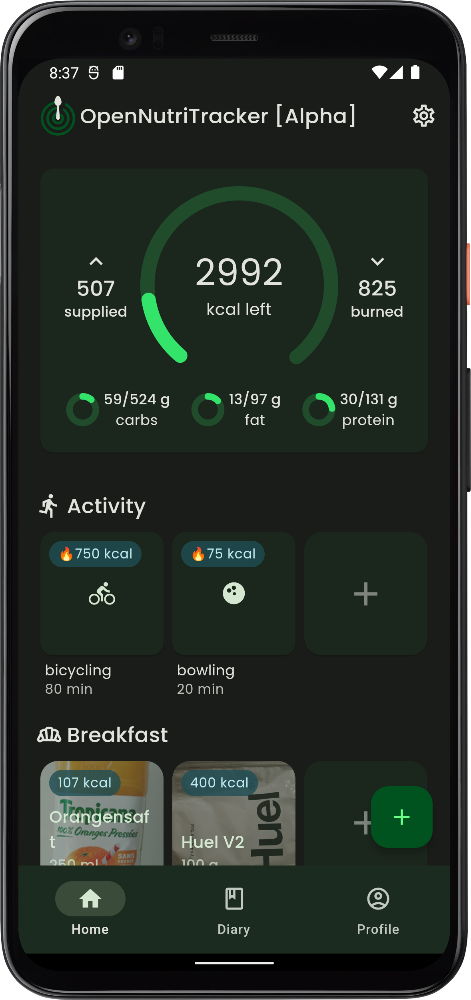
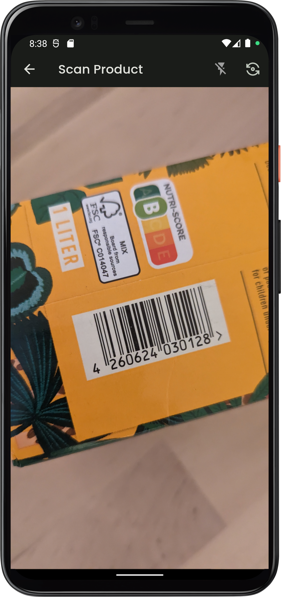
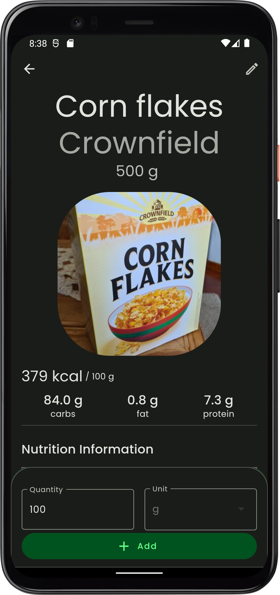
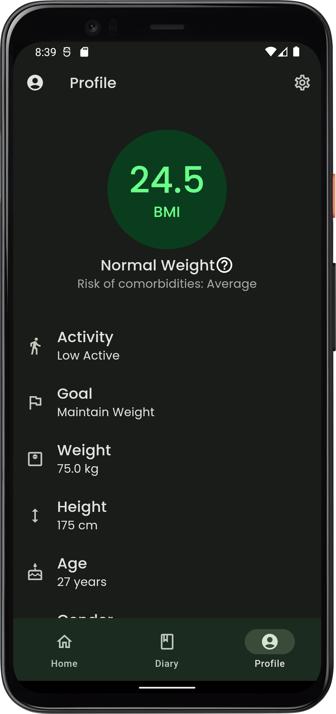

What you can actually do with it
- Log meals and snacks across breakfast, lunch, dinner, and the small unaccounted-for moments in between, and see how the day adds up at a glance.
- Search a large food database backed by Open Food Facts and USDA Food Data Central, so most of the things in your kitchen are already there.
- Scan barcodes on packaged food, which is sometimes the difference between logging the snack and forgetting about it.
- Keep a food diary by date, so you can look back at what a week of eating actually looked like rather than what you think it looked like.
- Track activity alongside intake, with MET-based estimates of the calories spent on walks, runs, rides, and the rest.
- Stay private. Your data is encrypted on-device. No account is required to use the app, and nothing is shared without your consent.
About privacy
OpenNutriTracker treats your nutrition history as the personal information it is. Everything you log lives in a local Hive database on your device, encrypted with a key kept in your platform's secure storage. There is no cloud sync, because there is no cloud account. If you want to move your data to another phone, you can export it from the Settings screen as a plain zip and bring it across yourself. The full data-protection statement lives at iubenda.
Verify your download
If you side-load the Android APK from GitHub Releases rather than installing through the Play Store, you may want to confirm that the file on your disk is the one we signed. There are two values you can check against — both are read automatically from the latest release and updated whenever a new one is cut.
Signing certificate
The fingerprint of the certificate the APK was signed with. This value is the cryptographically meaningful one — anyone with the matching private key could produce a matching signature, and nobody else can. It stays the same across every release.
loading…
SHA-256, lower-case hex, no separators. Issued to Simon Oppowa.
Latest APK file
The SHA-256 of the APK bytes published for the latest release. This changes every release, and lets you confirm the binary you downloaded matches the one we published, with no in-flight tampering.
loading…
Release …, published …. View release →
To verify the signing certificate yourself, run
apksigner verify --print-certs /path/to/app-release.apk against the
downloaded file. The Signer #1 certificate SHA-256 digest line in the
output should match the value above, byte for byte.
To verify the file hash, run sha256sum app-release.apk (Linux) or
shasum -a 256 app-release.apk (macOS) on the downloaded file. The
printed value should match the latest-APK value above.
Contributing
OpenNutriTracker is open source under the GPLv3 license, and contributions are warmly
welcomed. If you have spotted a bug, would like to translate the app into another
language, or want to propose a feature, the
issue tracker
is the place to start. The
CONTRIBUTING guide
in the repository covers the conventions, including the requirement to target the
develop branch and the steps for adding localized strings.
A note before you rely on it
OpenNutriTracker is not a medical application, and the nutritional values it shows are estimates rather than clinical measurements. Please be gentle with yourself when you use it, and if you have specific dietary needs, talk to a professional who can meet you with the context you are in. Use during illness, pregnancy, or lactation is not recommended.